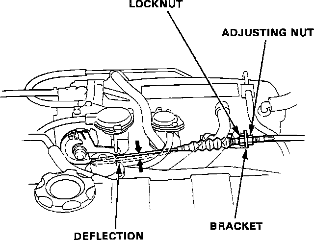
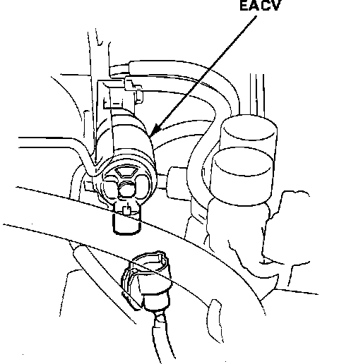
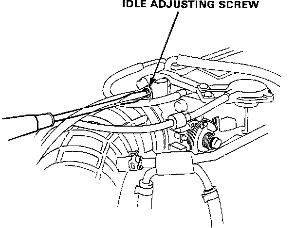

Idle Speed Setting
Throttle Cable Adjustment:

1. Check that the throttle cable operates smoothly with NO binding or sticking.
2. Check throttle cable deflection at the throttle linkage. Throttle cable deflection should be:
0.39 - 0.47 in. (10 - 12 mm)
3. If throttle cable deflection is not within specifications, loosen the lock nut and turn the adjusting nut until the deflection is as specified.
4. Tighten the locknut and recheck the throttle cable deflection and if necessary readjust.
5. With the throttle cable properly adjusted, check the throttle valve to be sure it opens fully when you push the accelerator pedal to the floor. Also check that the throttle valve returns to the idle position when the accelerator pedal is released.
6. START the engine and warm it up to normal operating temperature, (the cooling fan comes on).
7. Connect a tachometer.
Electronic Air Control Valve (EACV) Connector Location:

8. Disconnect the 2 pin connector for the Electronic Air Control Valve (EACV).
9. Check the Idle Speed with NO load on the engine, headlamps, air conditioning, blower fan, rear window defogger, radiator cooling fan and brake lamps all OFF. Idle Speed in NEUTRAL should be:
Manual Trans. 650 +- 50 RPM
Automatic Trans. 650 +- 50 RPM
Idle Adjusting Screw:

10. If necessary adjust Idle Speed by turning the idle adjusting screw at the top of the throttle body.
NOTE: If the Idle Speed is excessively high, check the dashpot for proper operation and retest Idle Speed.
11. Turn the ignition OFF.
12. Reconnect the 2 pin connector for the Electronic Air Control Valve (EACV).
13. Remove the HAZARD fuse at the main fuse box for 10 seconds to reset the ECU.
14. IDLE the engine for one minute with NO load and recheck the engine Idle Speed. Idle Speed in NEUTRAL should be:
Manual Trans. 750 +- 50 RPM
Automatic Trans. 750 +- 50 RPM
15. Set the parking brake and block the wheels. IDLE the engine for one minute in NEUTRAL with the head lamps ON high beam and the rear defogger ON and check the Idle Speed. Idle Speed in NEUTRAL should be:
Manual Trans. 750 +- 50 RPM
Automatic Trans. 750 +- 50 RPM
16. IDLE the engine for one minute with the blower fan ON (high speed) and air conditioner ON and check the Idle Speed. Idle Speed in NEUTRAL should be:
Manual Trans. 750 +- 50 RPM
Automatic Trans. 750 +- 50 RPM
17. Cold engine Idle Speed is NOT adjustable.
18. If Idle Speeds are not within specifications refer to, "Computers and Control Systems".